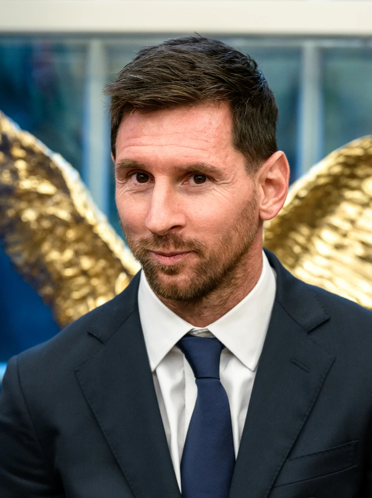

2022
GOAT
10

CARA DESTACADA · QATAR 2022
ARGENTINA · 1987
Lionel Messi
Cinco Mundiales, un destino. Levantó la copa que le faltaba.
Debutó en 2006, perdió en 2014, calló al Maracanã, lloró en 2018 y conquistó Lusail en 2022 con dos goles en la final y un penal decisivo en la tanda. Dribla sin tocar a nadie. Ve el pase que nadie ve. Hace que el 10 vuelva a significar algo.
5
Mundiales
13
Goles
26
Partidos
1
Título
El debate eterno
Pelé vs Maradona vs Messi · ¿Quién marcó más al Mundial?
Pelé
Mundiales4 (58, 62, 66, 70)
Títulos3
Goles12
Debut a los17
Balón de Oro WC—
vs
Maradona
Mundiales4 (82, 86, 90, 94)
Títulos1
Goles8
Asistencias8
Balón de Oro WC1986
vs
Messi
Mundiales5 (06, 10, 14, 18, 22)
Títulos1
Goles13
Asistencias8
Balón de Oro WC2014, 2022